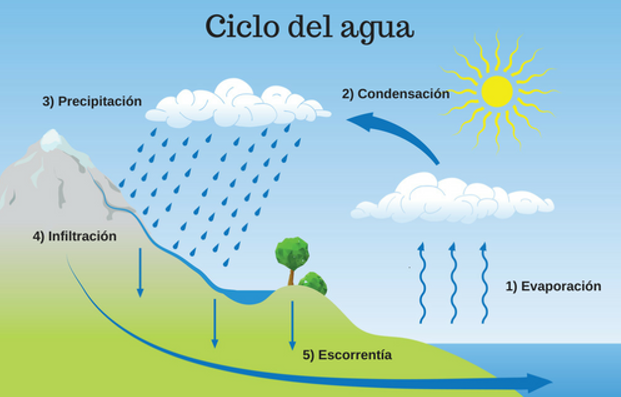

PROYECTO TRANSVERSAL
PROYECTO TRANSVERSAL
EL CICLO DEL AGUA
¿Qué es el ciclo del agua?Es el proceso continuo mediante el cual el agua circula a través de la atmósfera, la tierra y los cuerpos de agua de la Tierra. Este ciclo es fundamental para mantener el equilibrio ecológico y garantizar la disponibilidad de agua en el planeta. El ciclo del agua se compone de varias etapas interconectadas:
1.Evaporación: El agua de los océanos, ríos, lagos y otras masas de agua se calienta debido a la radiación solar. Esto provoca que se evapore y pase al estado gaseoso, formando vapor de agua en la atmósfera.
2.Transpiración: Las plantas también liberan vapor de agua a través de sus hojas en un proceso llamado transpiración. Junto con la evaporación, este proceso se conoce como evapotranspiración, que es la principal fuente de humedad en la atmósfera.
3.Condensación: A medida que el vapor de agua asciende en la atmósfera, se enfría y se condensa formando pequeñas gotas de agua o cristales de hielo. Este proceso crea las nubes, que son acumulaciones de vapor de agua condensado.
4.Precipitación: Cuando las gotas de agua o los cristales de hielo en las nubes se agrupan y se hacen lo suficientemente grandes, caen a la Tierra debido a la gravedad en forma de precipitación. La precipitación puede ser lluvia, nieve, granizo o llovizna, dependiendo de la temperatura y otras condiciones meteorológicas.
5.Infiltración y escorrentía: Parte del agua que cae sobre la superficie terrestre se infiltra en el suelo y recarga los acuíferos subterráneos, lo que se conoce como infiltración. El agua que no se infiltra, especialmente en áreas con suelos impermeables, fluye a través del suelo hacia ríos, lagos y océanos en un proceso llamado escorrentía.
6.Almacenamiento: El agua que se infiltra en el suelo se almacena en acuíferos subterráneos, mientras que el agua en ríos, lagos y océanos también se almacena en esas fuentes. Este almacenamiento es esencial para garantizar el flujo continuo de agua a través del ciclo.
7. Evaporación desde superficies terrestres: Además de la evaporación desde los cuerpos de agua, también hay evaporación directa desde la superficie del suelo, vegetación y otras superficies de la Tierra.
